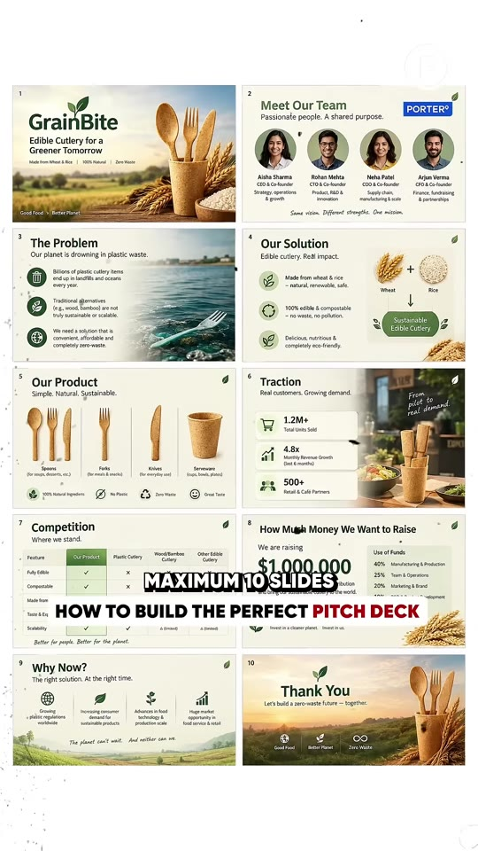
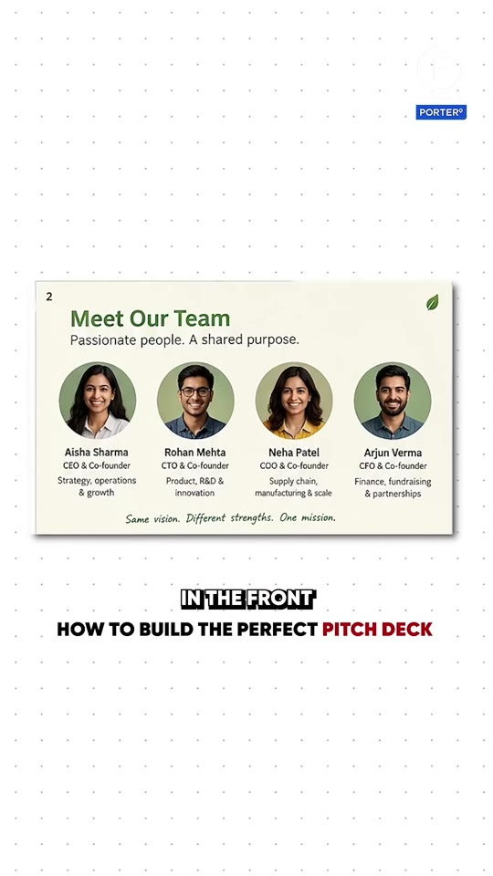
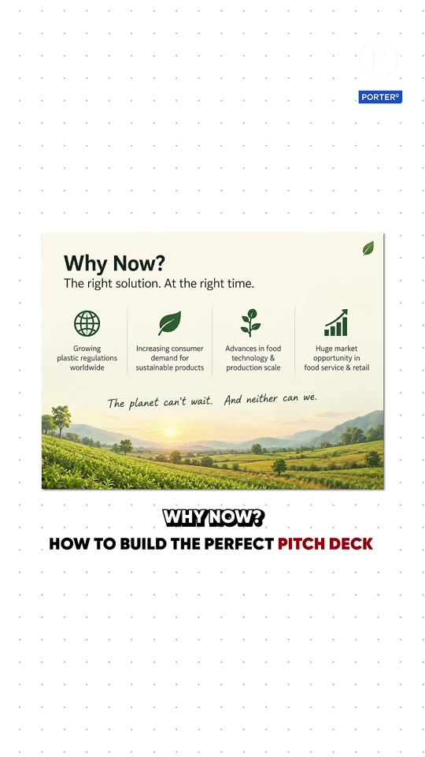
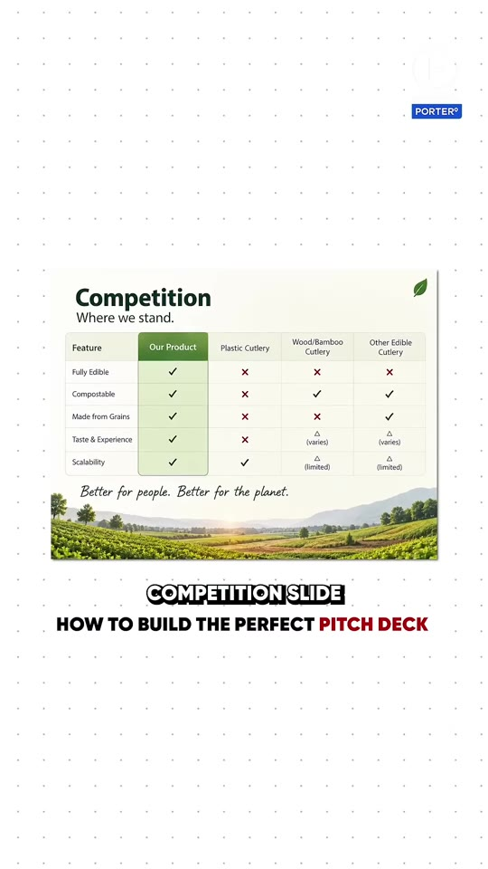
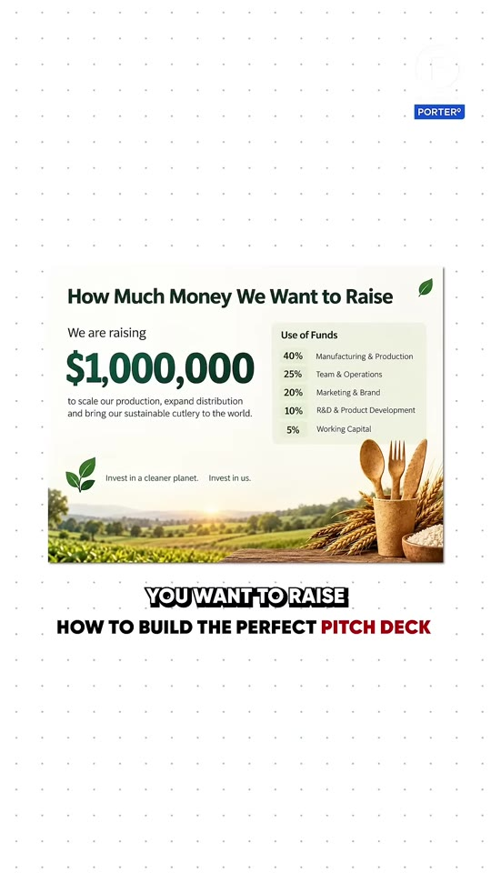

Business · Pitch-Deck
The 10-Slide Investor Pitch Deck Formula: Sasha Mirchandani (Kae Capital) Framework
A 10-slide venture capital pitch deck formula detailed by early-stage VC Sasha Mirchandani (Founder and Managing Partner at Kae Capital, Co-Founder of Mumbai Angels). Addresses the “team-first vs. team-last” structural debate, and outlines the precise slide progression (Team, Problem, Solution, Why Now, Product Demo, Traction, Competitive Matrix, and The Ask with Use of Funds) engineered for high investor conversion.

The 10-Slide Sequence & Structural Logic
- Slide 1 — Cover Slide: Company name, logo, one-line positioning statement (e.g. “GrainBite: Edible Cutlery for a Greener Tomorrow”).
- Slide 2 — Meet Our Team (Placed in Front):
- Investor rationale: Place founding team bios on Slide 2. Early-stage venture capitalists invest primarily in founders, so identifying who is speaking, their complementary domain expertise, and operational track record immediately frames the narrative.
- Content: Photos, specific executive titles (CEO, CTO, COO, CFO), and past operational pedigree.
- Slide 3 — The Problem:
- Quantify the pain point clearly without industry jargon (e.g. “Billions of plastic cutlery items end up in landfills each year; existing alternatives are brittle or expensive”).
- Slide 4 — Our Solution:
- The direct antidote to the stated problem (e.g. “100% edible, renewable, home-compostable wheat & rice cutlery”).
- Slide 5 — Why Now? (The Catalytic Window):
- Crucial slide bridging solution to market urgency. Identifies external macro tailwinds: new regulatory bans on single-use plastics, surging consumer green demand, and manufacturing cost breakthroughs.
- Slide 6 — Product Demo & Specifications:
- Show, don't just tell: embed high-resolution product photography, SKU variants (spoons, forks, knives), and an embedded short video demo showing durability in hot liquids.
- Slide 7 — Traction:
- Hard empirical evidence: units shipped, pilot enterprise accounts, MoM revenue trajectory, or user waitlist numbers over the last few months.
- Slide 8 — Competitive Landscape:
- A feature-by-feature matrix comparing your product against legacy incumbents and direct alternatives (Fully Edible, Compostable, Scalability, Cost).
- Slide 9 — How Much Money We Want to Raise (“The Ask”):
- State exact target amount (e.g. “Raising $1,000,000”).
- Mandatory: Include a percentage Use of Funds breakdown:
- 40% Manufacturing & Production
- 25% Sales & Operations
- 20% Marketing & Brand
- 10% R&D / Product Development
- 5% Working Capital
- Slide 10 — Closing & Contact: Concluding vision statement, social impact summary, founder direct email, and phone contact.
Slide Architecture Breakdown




Verbatim Breakdown
| Timestamp | Screen / Source | Verbatim Content |
|---|---|---|
00:00 |
Spoken (Raj Shamani) | “Give me a step-by-step formula to make the best pitch deck... the easiest pitch deck that will give you high conversion.” |
00:05 |
Spoken (Sasha Mirchandani) | “Say maximum 10 slides... this is a bit of a debate on the first slide. Koi-koi log bolte hain team pehle dalo, koi bolte hain team end mein dalo.” |
00:16 |
Spoken (Sasha Mirchandani) | “I like the team in the front. I like to see who I am meeting and talking to.” |
00:20 |
Spoken (audio) | “Iske baad Problem... second page is Problem... fir uske baad Solution... uske baad one slide on product, if you can show how it works on a video... simple demo, click karke ho jaye.” |
00:30 |
Spoken (audio) | “Uske baad Traction, if the company has a few months of traction... fir Competition slide, where do you stand... one slide on how much money you want to raise (we are raising $1 million or jo bhi ho)...” |
00:41 |
Spoken (audio) | “Why Now slide: Why Now is very important. After Problem, Solution, and then Why Now.” |
00:38 |
Slide text (Use of Funds) | We are raising $1,000,000 Use of Funds: • 40% Manufacturing & Production • 25% Sales & Operations • 20% Marketing & Brand • 10% R&D & Product Development • 5% Working Capital |
(caption) |
Post Caption | Sasha Mirchandani is an Indian entrepreneur, angel investor and venture capitalist, best known as the Founder and Managing Partner of Kae Capital and Co-Founder of Mumbai Angels... In Today's Episode, He Talks About How to Create the Perfect Pitch Deck for Investors. |
Investor Presentation Rules
- Keep It Under 10 Slides: Venture capitalists review hundreds of decks per week. Anything beyond 10–12 slides signals unfocused thinking and lack of clarity.
- Team Transparency: Never bury the team slide on slide 15; highlighting domain pedigree upfront frames investor confidence throughout the remainder of the deck.
- Runway Milestone Linking: Always ensure the total ask ($1M) clearly specifies how many months of operational runway it purchases (e.g. 18 months) and the exact financial/traction milestones to be achieved prior to the subsequent Series A round.
Try This
- Audit your current pitch deck: ruthlessly delete any slides beyond 10, moving technical architecture diagrams into an Appendix.
- Move your Team slide directly to Slide 2 (immediately following the title card).
- Add a dedicated “Why Now?” slide between Solution and Product outlining 3 macroeconomic, technological, or regulatory shifts that make your solution uniquely viable today compared to 3 years ago.
- Explicitly itemize your capital ask with a percentage-based Use of Funds table.
Open Questions
- Pre-revenue seed decks vs. Growth-stage decks: For early-stage pre-seed startups without multi-month revenue traction, replacing Slide 7 (Traction) with early design partner letters of intent (LOIs) or waitlist signups demonstrates market pull.